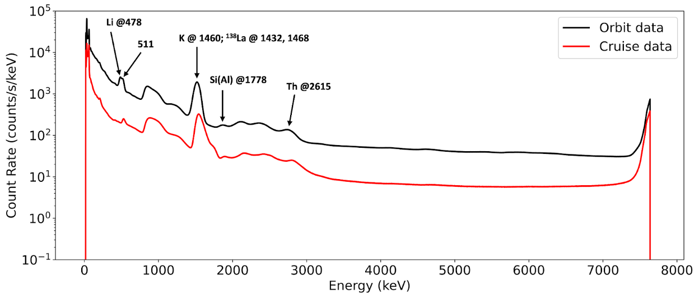

The lunar regolith has been of interest to planetary scientists and exploration engineers alike, as it records billions of years of solar system history and hosts confirmed volatile deposits like water-ice in its subsurface. Understanding where these resources lie — and at what depth — is critical both for reconstructing the Moon's geologic history and for enabling sustainable future exploration. I am interested in exploring the physical and spectral properties of the lunar surface, and how they can inform our understanding of regolith structure, volatile preservation, and the Moon's broader geologic evolution.



Elemental Hydrogen Detection
Hydrogen is a key indicator of water-ice and other volatile deposits in the lunar subsurface, making its distribution critical for understanding resource potential and the history of volatile delivery to the Moon. The Korea Pathfinder Lunar Orbiter (KPLO) Gamma-Ray Spectrometer (KGRS) detects characteristic gamma-ray and neutron signatures produced by galactic cosmic ray interactions with the lunar surface, which we use to map hydrogen abundance at the poles.

Regolith Depth
The lunar regolith records billions of years of solar system history and hosts confirmed volatiles like water-ice, making knowledge of its thickness critical for resource stability and future landing safety. Because consolidated rock has higher thermal inertia than fine-grained regolith, Diviner surface temperatures can map rock distribution, which I leverage to statistically calculate regolith thickness using rock abundance estimates at cold spot craters. Our updated results show that 50% of craters become rocky at excavation depths of ~13 m and ~17 m in the mare and highlands respectively, with mare craters reaching consolidated rock at slightly shallower depths.

Ice and Shadows
Undergraduate research focused on constructing a database of crater depth-to-diameter ratios on Mercury and the Moon to investigate shadowed regions and the potential infill of water-ice deposits.